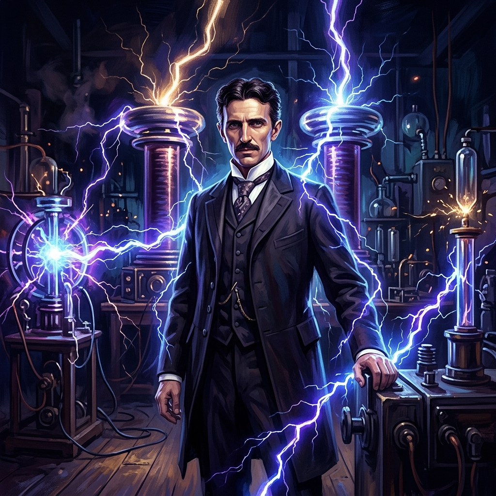
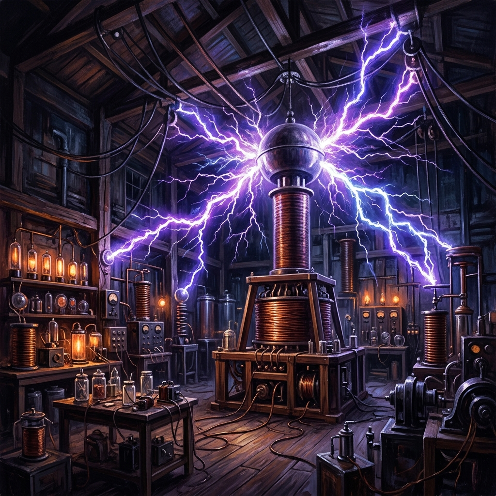

A Tribute To
The visionary inventor who electrified the world and dared to dream of a wireless future
1856 – 1943
Nikola Tesla was born on 10 July 1856 in the small village of Smiljan, then part of the Austrian Empire and present-day Croatia. From an early age, he demonstrated a prodigious memory and an almost supernatural ability to visualise complex machines entirely within his mind — building, testing, and refining inventions before committing a single line to paper. His mother, Đuka Mandić, was herself an inventor of household appliances, and young Nikola credited her with sparking his lifelong fascination with electricity and engineering.
After studying engineering in Graz and physics in Prague, Tesla emigrated to the United States in 1884 with little more than a letter of introduction to Thomas Edison. The two brilliant minds clashed almost immediately: Edison championed direct current, while Tesla saw the future in alternating current. Their rivalry — later dramatised as the "War of Currents" — would reshape the entire electrical infrastructure of modern civilisation and ultimately prove Tesla's vision correct.
In 1887, Tesla developed the first practical alternating-current induction motor and the polyphase AC system that would become the standard for electrical power transmission worldwide. Partnering with industrialist George Westinghouse, he won the contract to illuminate the 1893 World's Columbian Exposition in Chicago — a dazzling demonstration that proved AC's superiority over Edison's direct-current system. The following year, Tesla and Westinghouse harnessed the power of Niagara Falls to generate AC electricity, a feat many had considered impossible, and transmitted it over 20 miles to the city of Buffalo, New York.
Tesla's ambitions extended far beyond motors and generators. At his Colorado Springs laboratory in 1899, he produced artificial lightning bolts over 40 metres long and claimed to have received signals from extraterrestrial sources. He envisioned a global wireless communication system decades before the internet, and his Wardenclyffe Tower project on Long Island aimed to transmit both information and electrical energy without wires. Though the project collapsed due to lack of funding, its core principles anticipated technologies that would not become mainstream for another century — including Wi-Fi, cellular networks, and wireless charging.
Tesla spent his final decades in relative obscurity, living alone in room 3327 of the New Yorker Hotel and feeding the pigeons in nearby Bryant Park. He held over 300 patents across 26 countries, yet died nearly penniless on 7 January 1943 at the age of 86. In the decades since, the world has come to recognise what was overlooked in his lifetime: that Tesla's inventions and ideas laid the groundwork for the modern electrical grid, radio communication, robotics, radar, and even the theoretical basis for smartphones. The SI unit of magnetic flux density — the tesla — was named in his honour in 1960, a small but fitting tribute to a man who literally measured the invisible forces that power our world.
The present is theirs; the future, for which I really worked, is mine.
Nikola Tesla is born during a lightning storm in the village of Smiljan, Austrian Empire (modern-day Croatia). Legend holds the midwife called it a bad omen, to which his mother replied: "No. He will be a child of light."
Emigrates to New York City with four cents in his pocket, a book of poems, and a letter addressed to Thomas Edison. He briefly works for Edison before striking out on his own.
Patents the alternating-current induction motor and polyphase AC power system — the technology that would eventually power the entire modern world.
Tesla and Westinghouse illuminate the Chicago World's Fair with AC power, stunning millions of visitors and decisively winning the War of Currents against Edison's DC system.
Designs the hydroelectric generators at Niagara Falls — the world's first large-scale AC power plant — transmitting electricity over 20 miles to Buffalo, New York.
Conducts experiments in wireless energy transmission, producing artificial lightning bolts over 40 metres long and lighting 200 lamps from a distance of 25 miles without wires.
Begins construction of Wardenclyffe Tower on Long Island, intended as a global wireless communication and energy transmission hub — a concept a century ahead of its time.
Tesla passes away in New York City, holding over 300 patents. The U.S. Supreme Court later upholds his patent for radio invention, and in 1960, the SI unit of magnetic flux density is named the "tesla" in his honour.

If you want to find the secrets of the universe, think in terms of energy, frequency and vibration.